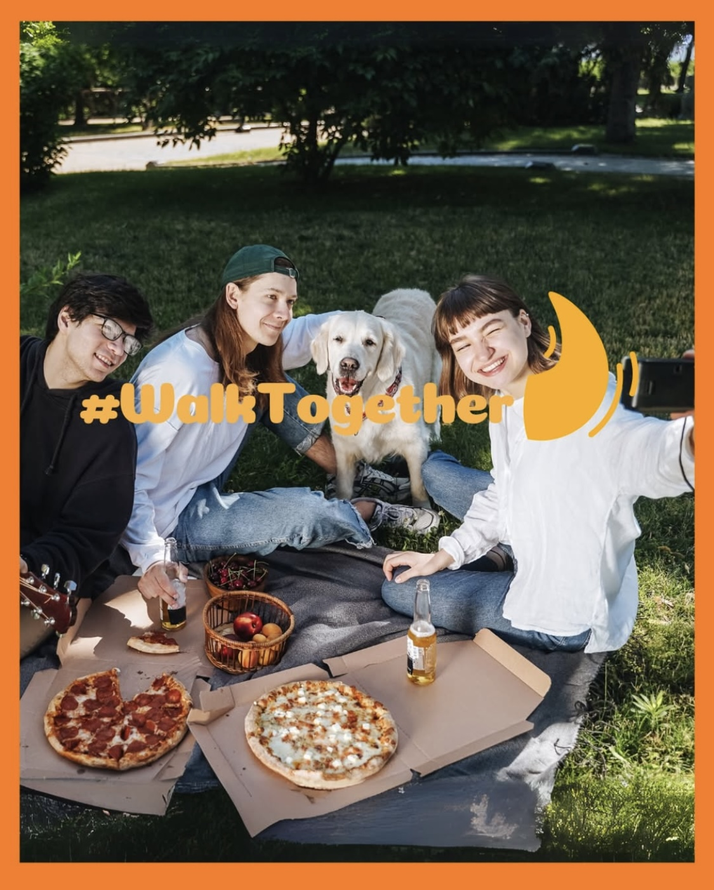

General Information
This branded website is publicly available at https://zoomies-official.github.io/zoomies
This website was created by:
- Elizaveta Riskova (ID: 235457)
- Karolina Radevall (ID: 232487)
- Zara Castelijn (ID: 213905)
- Devon Gijzen (ID: 232016)
Content
| # | Student ID | Value | Name and link of content |
|---|---|---|---|
| 1. | 235457 | Website | Home page |
| 2. | 232487 | Website | About page |
| 3. | 213905 | Marketing | Corporate |
| 4. | 232016 | Management | Corporate |
Vision
“In a world where owning a dog can occasionally feel solitary, we believe that unplanned interactions amongst like-minded dog owners will build stronger networks and more satisfying experiences. Only because then, every park stroll, every trip together, and every tall wag will turn into a chance for bonding for dogs and even their owners.”
Values
- Joy
- Responsibility
- Freedom
- Well_being
- Community
Production
Design Elements
Colors:
-
- #FBB03C Mustard is a warm, inviting color that instantly sparks feelings of positivity and friendliness. It represents the sun, warmth, and energy of outdoor walks with your dog. As the primary color, it ensures Zoomies feels approachable, joyful, and full of life — it brings warmth and approachability while still being energetic. Great for highlights and call-to-actions without overwhelming.
- #7B8D46 Olive Green was chosen for its natural, earthy tone, Olive Green reflects the outdoor, adventurous spirit of Zoomies. It connects to nature, parks, and walking paths — where our community finds joy.
- #ED8034 NL Orange is a bright accent color that adds boldness and energy without overpowering. It works beautifully for highlights, icons, and social media callouts where you need extra pop.
- #FFE3A2 Egg Shell is a soft, neutral shade that lightens designs, improves readability, and makes text-heavy layouts feel easy on the eyes.
- #9DDFE5 Sky Blue is a calm, refreshing tone that symbolizes open skies and freedom. It also modernizes the palette and works beautifully in digital interfaces.
- Font choices:
- Piepie: A bold, rounded display font that feels playful, approachable, and pet-friendly — perfect for headlines and capturing attention. It makes Zoomies feel approachable, fun, and not too serious while still being clear. The rounded shapes in the font make the font center of the overall use of rounded and playful shaping.
- Alfabet: A clean, sans-serif typeface that keeps body text highly readable, especially important for on-phone use like our app and Instagram posts. It balances out the playfulness of Piepie, maintaining a good balance with professionality.
- Navigation bar - Zoomies' simple design is reflected in the navigation bar. Our audience can locate what they need fast because of the straightforward structure and obvious names like Home, About, Product, and Corporate. Like our business objectives, the logo's #FBB03C Mustard colour and white colour make the atmosphere airy and friendly. By this we are keeping the navigation simple and easy to use.
- Carousel - The carousel at the top of our website perfectly aligns with the Zoomies brand because it visually captures the joy, freedom, and community spirit that our app promotes. The large, vibrant images of dogs in open, natural spaces reflect the playful and social essence of dog ownership, while the bold captions like "Joy," "Freedom," and "Community"reinforce the emotional connections we aim to foster through the Zoomies app. It creates an immediate, inviting, and dynamic atmosphere that resonates with dog owners looking to connect, explore, and enjoy life with their pets.
- Grids - The Zoomies website's grid style aids in presenting content in an orderly, amiable, and visually balanced manner. Zoomies prioritises both visual storytelling and straightforward, inviting message, which is reflected in the two-column grid used for sections like About and Product. This helps to create a simple, easy-to-follow framework where images and text are given equal weight. Similar to the joyful, unplanned energy Zoomies promotes among dog owners, the alternating arrangement of illustrations and text creates a sense of movement and variation. Additionally, it makes the website accessible and mobile-friendly, guaranteeing that users of all devices, desktop or mobile, can easily navigate, explore, and interact with the business.
- Footer - The Zoomies website's footer includes contact information, quick connections, social media symbols, and app download buttons. The brand's outdoor and nature-loving attitude is visually shown by the use the of earthy colour like #7B8D46 Olive Green. By providing download buttons and social network links, the users can quickly access our product and socials.
- Two-column layout introduces the Zoomies app by striking a balance between educational content and visual engagement. On the Product page, the app's tone is established by the large blocks that include descriptive paragraphs that highlight the app's function.
- Dogs' illustrations are shown across the website to show warmth and individuality. It makes the website layout more engaging and eye-catching.
- A modern phone mockup of the app is shown along with a brief description. The app's main features are presented in visually appealing and user-friendly phones because the users then can see how it will look like in their phones.
- Cards were used to show our brand values like joy, responsibility, freedom, well-being, and community. We are using emoji icons for immediate emotional connection, recognition and simplicity. The layout is clean and structured making each value easy to grasp.
User Interface
Structure of the navigation and content
To ensure a smooth and simple user experience, the website is divided into distinct sections. First, we have the homepage which introduces visitors to Zoomies, with an engaging carousell, visuals, and a brief introduction to the brand and the product. Secondly, In the “About” page, there is in-depth background information on Zoomies, including the company's vision and values. Thirdly, along with quick access to downloadable links for the Apple Store and Google Play, the website also has a product section where consumers may see the features and advantages of the software. Every content block is thoughtfully created to emphasise the company's primary products while preserving clarity and visual coherence. Whether they are learning about the brand, finding the product, or installing the app, customers can easily browse to the parts that interest them. A navigation bar with links like Home, About, Product and Corporate have been added to improve user navigation. This ensures visitors can easily find relevant content. The content structure is purpose-driven, with each page dedicated to specific functions, such as informing visitors about the brand or encouraging them to engage with the app, making sure users can easily find what they need without feeling overwhelmed.
Justification by referring to the theory and vocabulary of design
The Zoomies website is designed to reflect the brand’s joyful, communal spirit by creating a friendly and approachable digital space that resonates with dog owners like our persona, Max. Drawing on user-centered design principles, the layout prioritizes content relevant to Max’s needs, such as walking routes, community events, and safety resources, while ensuring easy navigation and clear calls-to-action. The playful, rounded logo and typography (Piepie) convey warmth and spontaneity, while the clean Alfabet font ensures readability and balance. The color palette, grounded in color psychology, uses warm mustard for positivity and energy, olive green for nature and well-being, and sky blue for freedom and calm, creating a harmonious and inviting interface. Visual hierarchy is carefully applied through contrasting CTAs, consistent navigation, and repositioned download buttons in the footer to improve usability and reduce cognitive load. Interactive visuals, playful icons, and emotionally resonant messaging turn everyday walks into shared adventures, aligning with affective UX design principles. Altogether, every design choice, from typography and color to layout and iconography, has been intentionally crafted to enhance usability, support emotional engagement, and embody Zoomies’ brand values of joy, community, and freedom.
Justification of Design Choices
How does website design fit the values and personality of the brand? The Zoomies website design reflects the brand’s values of joy, freedom, community, responsibility, and well-being by creating a playful, warm, and inviting digital space for dog owners. We are using rounded, friendly typography and cheerful colors like mustard and egg shell evokes a sense of positivity and energy, while natural tones like olive green connect to outdoor adventures. The layout emphasizes community by highlighting easy ways to connect to our app and socials. Clear navigation and approachable icons, like the paw-shaped location pin, reflect the brand’s responsible and user-friendly nature, ensuring dog owners can quickly access essential information while feeling welcomed and understood. Together, these design choices mirror the brand’s personality: lively, caring, social, and grounded in creating meaningful, shared experiences for dogs and their owners.
How does website design fit the marketing and communication strategy? The website design of Zoomies aligns closely with the marketing and communication strategy by reflecting the brand’s core values of community, joy, freedom, and responsibility while creating a warm, approachable, and user-friendly digital space for dog owners. The design emphasizes clear navigation, inviting visuals, and community-driven features, making it easy for users like Max to find what matters to them most. Consistent with the playful and personal tone used across social media, the website incorporates elements like bright colors, engaging icons, and real-life dog-owner stories, reinforcing the brand message “Because Every Walk is a Shared Adventure!” This consistency across channels ensures that visitors feel the same sense of connection and authenticity on the website as they do in the “Walk Together” campaign and social platforms, helping to smoothly transfer online interest into active app engagement and community participation.
How does the website design help showcase the unique value proposition of the product? The website design for Zoomies is showcasing the brand’s unique value proposition by visually and interactively highlighting the harmony between dog owners’ needs and their pets’ well-being. Through clear and friendly visuals of dog owners enjoying walks and connecting with others, combined with dynamic previews of the interactive map and community inbox, the website immediately communicates the app’s focus on joy, freedom, responsibility, and community. The design balances practical functionality, like download links, app features and social media integration, with an emotional appeal through storytelling, user testimonials, and community highlights. This ensures visitors quickly understand that Zoomies isn’t just about dog-friendly spots, but about enhancing the entire dog ownership experience, making it more connected, convenient, and enjoyable for both the dog and its owner.
Credits
Please provide links and/or credits for third-party elements including:
- HTML template: buas-media-interactive/prj4-group-template
- UX patterns: getbootstrap.com
Images
- JanDux: Bordeaux mastiff Pixabay
- Senivpetro: Young couple walking their french bulldogs in park Freepik
- canva dog elements@sketchify
- Free Photo from @prostooleh - Two Stylish Girls in A Sunny Field With Dogs, 2020Freepik
- Free Photo - Adorable Pitbull Dogs Looking Up, 2021Freepik
We used ChatGpt help when coding the website.
Testing Report
Testing Goals
We have created the website of Zoomies to visualize our brand. The goal of the website is to create brand awareness and to show our target audience our intentions through our brand values and vision. Besides this, we want to show our target audience what they can expect from our app and where to download it.
Testing methods
Testing participants
During the test, participants will be shown the website of Zoomies. They will get different assignments and navigate themselves through the website. The participants of our usability test session must be part of our target audience; meaning they are dog owners between the ages of 25 and 60 years old. We will do the test session with at least four members of our target audience since it will create a big enough indicator for our findings and possible future improvements.
Test setting
The test sessions were conducted at Breda University of Applied Sciences, with participants accessing the Zoomies website from the computers. We provided them with our website and asked their permission to be recorded.
Test Protocol
We had two research questions for our test session:
- Does the participant understand why our brand Zoomies is created based on our website?
- What is the User Experience of the participants while using our website?
During the test session, we gave our participants the following tasks:
- Task 1- Finding information about our product/ app.
- Task 2- Finding our social media platforms.
- Task 3- Finding a page, where there is information about the brand.
- Task 4- Finding, where they can download our app.
- Task 5- Finding our contact information.
The context we gave the participants was to imagine that they are a dog owner, wanting to connect more with other dog owners in their area and in need of a Zoomies app. They came across our page where they needed to explore and download the app to their device.
Findings
After we have conducted the usability test session, we have received the following test findings based on the five E’s of Usability:
- Effectiveness- Most participants were able to successfully complete the tasks, including finding the app information, social media platforms, brand details, app download page, and contact information. On the other hand, a few participants struggled to locate the download buttons of the app, suggesting it wasn’t as clearly positioned or labeled as it could be. In addition, it was difficult to follow along and find information in long texts.
- Efficiency- While tasks were generally completed, participants sometimes took longer than expected to find certain pages, especially the button, where they could download the app. For this the download app needs to be added in the footer. Navigation wasn’t always clear, leading users to scroll through the homepage and not using the navigation bar. The homepage and the navigationbar could be improved to make this process faster.
- Engagement- Participants responded positively to the playful, dog-friendly theme of the Zoomies concept and appreciated the idea. However, they noted that the website felt a little text-heavy, which reduced the fun, engaging vibe. Due to this, we will be adding more imagery and interactive elements to engage the audience.
- Error Tolerance- No major technical errors were encountered, but just some inconveniences like not having the app store buttons so accessible to the users or having too much overwhelming text in some places.
- Ease of Learning- Most participants were able to learn how to use the site relatively quickly after having the first look at it. The structure made sense and showed us that even though some improvements are needed, the overall layout and look of the website is good.
Hierarchized findings:
Overall, the most critical issue affecting effectiveness and efficiency was the difficulty participants faced in locating the app download buttons, which were not clearly positioned or labeled, causing delays and confusion. Closely following this was the unclear navigation structure, where users tended to scroll through the homepage instead of using the navigation bar, slowing down their ability to find key information. Thirdly, the text-heavy content negatively impacted engagement, making the website feel less playful and approachable despite its dog-friendly theme. To address this, more imagery and interactive elements are needed. On a lower impact level, error tolerance was generally good, with no major technical problems, though minor inconveniences like inaccessible buttons and overwhelming text were noted. Finally, ease of learning was a positive aspect, as most participants quickly grasped how to use the site after a brief exploration.
Suggested Improvements
Based on the findings, we will make following improvements
- Improvement 1- Put the app store buttons also in the footer.
- Improvement 2- To have less text in the pages.
- Improvement 3- To have more visuals complementing our style guide.
Proof
In this section, you will find the proof of our test session with the four dog owners
TestingMarketing
Context of campaign and promotional activities
Our Brand
Zoomies is a brand that wants to strengthen the connection between dog-owners and their dogs, but also between like-minded dog-owners who value the health, development, and social behavior of their dogs. We are a big advocate for pet well-being, but we also value the joy, freedom, and responsibility of being a dog- owner. In order to be the best caretaker for their dogs, Zoomies believes that dog-owners should be helped in their journey of finding this joy, freedom, and responsibility because only then the best pet well-being can be created, something we value majorly. Also, community is an important value of Zoomies since we believe that helping and understanding each other in the sometimes-difficult task of raising a dog can be a big support for every dog-owner. We believe that a community will help create the best pet well-being since it can help dog-owners find even more joy, freedom, and responsibility by talking to others about the struggles and benefits of owning a dog. Therefore, Zoomies has set up a campaign called.
The Campaign
We are introducing the “Walk Together” campaign because we want to encourage dog owners to go outside, make new friends, and enjoy the many advantages of social walks. At Zoomies, we believe that walking your dog is a chance for community, connection, and improved well-being for both dogs and the dog-owners (Westgarth et al., 2019). Although many people view walking their dog as a solo activity, Zoomies sees it as an opportunity for sharing experiences that improves dog behavior, promotes well-being, and strengthens friendships. The goal of the “Walk Together” campaign is to establish an easier way to find like-minded dog owners in every living area. Zoomies aims to create a pleasant and encouraging environment in which every walk is an opportunity to find connection, share similar interests, and conversate about the life of being a dog owner.
The Message
The core message of the “Walk Together” campaign is: “Because Every Walk is a Shared Adventure!” It perfectly connects to the goals and values of Zoomies since our brand values the important things that matter to both dogs and dog-owners. Every walk is an important activity for a dog since it does not only improve the cardiovascular health of the dog, but it also improves the overall behavior of your dog (centers for Disease Control and Prevention et al., n.d.). Zoomies wants to make every walk an important activity for the dog owner as well since it can flourish new connections which makes walking the dog less of a “must do” activity.
Promotional Activity
The promotional activities Zoomies did for the “Walk Together” campaign are completely based on social media platforms Instagram and Facebook; we have used these platforms as our main channels to bring across our message. To engage with our target audience and to have a higher possibility of spreading awareness about our brand, we have started the social media promotional activity: “Walk Together Challenge”. The social media activity challenges dog owners to share a picture of their favorite dog-walking location. Together with the post, they must add the #WalkTogether and tag @zoomies.official into their post. On the day that the app is being launched, which is April 17th, the creator of the best picture will be rewarded with a free premium subscription for the first three months. Besides this social media activity, we have been constantly posting content about, for example, our brand values, the team behind Zoomies to create a more personal connection, and funny pictures and memes of dogs which shows the playful side of our brand.
Objectives of the “Walk Together” campaign
Specific - The main objective of the “Walk Together” campaign is to make dog owners aware of Zoomies. Once dog owners are familiarized with our brand, the objective will be to bring dog owners from every neighborhood in the Netherlands together by connecting them with each other through possible shared dog walks and interaction. The campaign should facilitate a possible small-scale community where dog walking becomes less of a solo and mandatory task and more of a shared adventure.
Measurable - First, the success of the campaign will be measured through the number of views on the posts from Zoomies’ social media accounts. Through these views, it will become visible to us how many people have at least gotten a glimpse of the “Walk Together” campaign. Then, when people visit our website, we will measure the engagement through the number of people willing to download the app by looking at the number of clicks on the links to the Google Play Store and App Store. After this, we will measure the number of downloads of our app. Based on these numbers, we can see if the campaign does its job by exciting dog owners to at least give it a try. Then, we will be able to measure the number of active users based on the number of times they open the app.
Achievable - Our brand is new to the market which means that we must start from scratch. Therefore, it is unrealistic to aim for high numbers of awareness or a high number of downloads for our app. Our reach objective will be that every post will be seen by a minimum of 15 people. The reason behind this objective is that there are already a lot of profiles and pages revolving around dogs which makes it difficult for a new brand to be seen by the public quickly. Also, we would like to achieve a total of 30 website visits and 30 downloads of our app once the app is being launched. Ultimately, we would like to have 20 consistent users within the first two weeks after the app has been launched.
Relevant - Our campaign is relevant since it perfectly aligns with the values of Zoomies. The “Walk Together” campaign will encourage dog owners to walk their dogs more often or for longer periods of time which will complement our value of pet well-being. Besides this, it will show dog owners that there is a community of dog owners in their living area, they just need to know where to find it. Once found, our other values of joy, freedom, and responsibility will be met as well. The affect we want to have with our campaign is that our target audience feels understood in some of their struggles of being a dog owner. We want them to know that we understand their problems regarding their urge for community, but also for safe walking routes and dog-friendly locations. These last two examples are knowledge we received from problem interviews with dog owners.
Time-bound - The campaign will officially launch on March 20th and will run until April 17th. The response we want to have, is that the people who have seen our posts within these four weeks will spread the word of our existence within the communities they are already part of on Instagram, Facebook, and in real life.
Target Audience
The target audience of Zoomies are dog owners between the ages of 25 and 60 who value the health, development, and social behavior of their dogs. Our target audience is broad since everyone can be a dog owner. Therefore, we have divided our target audience into two smaller segments: people between the ages of 25 and 40 years old, and people between the ages of 40 and 60 years old. We have created a persona in the form of an average user of Zoomies to identify what kind of people could be interested in our brand and are our main focus of, for example, the campaign. This persona is also the result of multiple problem interviews Zoomies has conducted to find out what current dog owners really seek nowadays.
Chosen Channels/Platforms
Research from the Pew Research Center shows that people between the ages of 25 and 40 years old use Instagram as their main social media platform. The research also showed that the other subgroup, the 40 to 60 year olds, within our target audience uses Facebook as their main social media platform (Pew Research Center, 2024). Cats have always been the number one animal regarding popularity on social media, but this changed in 2018. On Instagram, out of the 50 most followed pet accounts, 22 are related to dogs (Phillips, 2018). Therefore, it is the perfect platform to address our target audience and make them aware about Zoomies. Instagram is a platform which has more than 2 billion users worldwide each month which means it is a great social medium to engage with the part of our target audience between the ages of 25 and 40 years old (Kuligowski, 2024). Instagram provides a variety of ways in which we can address our target audience. We can post photos, videos like Instagram Reels, and Instagram Story posts. Instagram is used to start discussion, post random thoughts, and create a sense of community (Thomas et al., 2020). Since our app is also designed to create a community for the dogs and their owners, we can transfer the community that is being created on Instagram towards Zoomies. We will also use Facebook as a social media platform for Zoomies. As mentioned earlier, it is the best platform to reach our target audience between the ages of 40 and 60. Besides this, Facebook is part of the company Meta which is also the company under which Instagram falls. Once someone has both an account on Instagram and Facebook, they can link them which allows them to post the content they want to post simultaneously. A major strength of using Facebook is the amount of Facebook groups regarding dogs (Kogan et al., 2021). People have created these communities and we want to make these communities aware of Zoomies. This way, the communities of the Facebook groups can transfer towards our community as well.
Learning Points
Our brand Zoomies is constantly looking for improvements. Therefore, it is important that we note the points that we have learned when starting this new brand. Throughout the implementation of our “Walk Together” campaign, we have gained interesting insights about our target audience, the success of our promotional activity, and the strategies we have used to engage with our audience.
Learning Points During Duration of Project Concerning the Campaign
- Consistency is Important to Create Brand Awareness: In the beginning of our campaign, we tried to post every two or three days. Later in the campaign, we posted almost daily. It became visible to us that when we started posting way more often, that the engagement became higher. Besides this, we kept consistency throughout our posts in terms of design. We designed our posts in a way that it became cohesive which made the brand look trustworthy and believable.
- Importance of Finding the Correct Platform: We found our target audience in the range of people between the ages of 25 and 60 since it is possible for every age group to own a dog. We divided our target audience into two smaller groups because research has showed that the target group between the ages of 25 and 40 was more on Instagram and that the target group between the ages of 40 and 60 was more on Facebook. We noticed that it was easier to engage with the younger target group than the older target group. We received a stronger response on our posts on Instagram than we did on Facebook. The dog owners between the ages of 40 and 60 was more difficult to engage digitally. It showed us that it is important to find the correct platform to communicate with your target audience. Therefore, it should be wise to explore other communication options for these specific dog owners.
- Timing of a Promotional Activity: We decided to use a promotional activity during our campaign called: the Walk Together Challenge. We planned this promotional activity halfway through our campaign since we thought it would be wise to first get some engagement and let people get to know the brand and the creators behind it, but it also showed us that we could have potentially received more engagement if we would have posted the promotional activity earlier in our campaign.
What worked & what did not work?
It WORKED that we have a core message of our brand and combined it with the core message of our campaign as well. This way, our message “Because every walk is a shared adventure!” will be more easily linked with our brand when people see the campaign. It WORKED that we had a consistent design for the content that we have created for our social media pages. We constantly used the same color palette and created unique symbols and stickers. The result of this was that our social media pages looked professional and trustworthy. It DID NOT WORK to use Facebook as the social media platform to spread brand awareness towards the target group of people between the ages of 40 and 60 years old. The engagement was way lower than the engagement with the younger target group on Instagram. It DID NOT WORK to inform the target audience about the promotion activity midway through the campaign. We should have done this at the beginning of the campaign to increase the engagement that we had at that moment. Now, we posted the promotional activity when the engagement was at its lowest. In addition our Facebook was taken down by Meta, so we are not able to track it anymore.
What went as expected & what did not go as expected?
We expected that the engagement with the target group of dog owners between the ages of 25 and 40 would be the highest on Instagram, which was indeed the case. What we did not expect was that there was almost no engagement with the target group of dog owners between the ages of 40 and 60 on Facebook. We expected that we would meet our reach objective of a minimum of 15 people seeing every post. We have set this objective low since we are a new brand. Therefore, it is not realistic to immediately have thousands of views on your first couple of posts.
What would we do differently?
The first thing that we would do differently is to not see Facebook as the main channel to spread awareness about our brand to the target group of people between the ages of 40 and 60 years old. The four weeks of our campaign showed that it did not have much effect. We would address this target group with more physical promotion like flyers in shopping malls or specialized stickers in dog parks. Also, we would start the promotional activity for our campaign earlier since it did not have the full potential effect it could have if we would have made it publicly within the first week of our campaign. Lastly, we would reward people who would share our brand. The result of this would be that there is more mouth-to-mouth promotion without any costs except the rewards we would give to these people. It could lead to a higher awareness rate which is what our brand needs, especially in the early stages.
Future Planning
The “Walk Together” campaign was created to help our new brand Zoomies enter the market in a way that would establish awareness towards our broad target audience of dog owners. The main factors that have contributed to the positive effects of the campaign can be found in the clear brand message that was a part of the campaign but also resonates with our brand in general, the consistency of the posts’ design for our social media channels, and the engagement we received from the target group that uses Instagram as their main social media platform. During our campaign, we introduced the “Walk Together Challenge” to connect with our target audience and key persona. It helped connect with the audience, but we should have introduced the public to this promotional activity sooner. Other challenges during our campaign were the low offline visibility and the difficulty of notably reaching the older target group through Facebook.
If the project would continue, then we would create the following new and additional content:
- Healthy Tips: We would post content on our different channels about the health of dogs regarding, for example, things to do when it is very cold or very warm outside. This way, our brand value of pet-wellbeing would be met because not everyone knows what the best thing is to do for their dog in certain weather conditions.
- Local Hidden Gems: We would post content on our different channels about the different dog-friendly places in the Netherlands. We would post multiple pictures of the place, have a conversation with the owner about why they think it is important that there are dog-friendly places, and the location. This content would resonate with our value of freedom since these locations would give dog owners more freedom in doing something spontaneously because they can bring their dogs to these locations.
- Dog Diaries: We would post content on our different channels about the dogs whose owners use our app. It will give a personal touch to our brand since people really get to share their experience to a bigger public.
Future Recomendation
We would recommend to not continue with the online campaign only. Besides the online campaign on Instagram and Facebook, we would recommend to create physical stickers with QR-codes that can be placed at, for example, dog parks and shopping centers. During these four weeks of online campaign, it could be concluded that it was more difficult to reach the older target group. Therefore, an offline approach would help and since people will be taking their dogs to dog parks, it is the perfect place to put these stickers. They would only have to scan the QR-code and they will be directed towards our website and app. We would recommend working together with influencers who own a dog. This way, a bigger audience will be reached, and it becomes more likely that the brand would be picked up (Haenlein et al., 2020). We would recommend following other dog related social media accounts immediately. The brand could get inspired by the content they are generating, and people who follow other dog related accounts could get our account as a recommendation to follow since we could be an account they are also interested in (Casaló et al., 2017).
What we would do differently?
There would be a couple of things we would do differently based on our experiences on this project related to the marketing assignment. If we would have to do this project again, we would first prioritize to research our audience better. The younger part of our target group was easier to approach and to connect with since the posts on Instagram worked. However, it was more difficult to engage with the older group of our target audience. Therefore, we would also explore offline options for the promotion of our campaign in the future. We would invest more time in the possibilities for promotional activities like flyers in shopping malls or the QR-codes that were mentioned earlier. Also, we would make a clearer overview of the posts and the campaign for our brand. It can make the process of posting consistently easier. We would also explore the possibilities of using Artificial Intelligence for the content we are publishing since AI gets its information from different databases which could help address our target audience in a better way.
Professionalism
We have compared the following three types of posts:
- Personal posts (memes).
- Brand insights (meet the team & info posts)
- Campaign posts.
Brand Insights (Meet the Team)
- Posts in this category received the most likes overall.
- Each team member’s post averaged around 150 views with a notably high like-to-view ratio compared to other content types.
- Informational posts (also under brand insights) performed well too, showing a good balance between high views and likes.
Campaign (#WalkTogether)
The campaign proposal post received the highest number of views across all content types. However, despite the high views, it had lower likes and interaction in comparison to other types of posts.
Personal Posts (Memes)
After posting the second meme, there was a clear increase in followers and a steadier engagement pattern. The first two memes had consistent interaction in terms of views and likes. One meme that was reposted to the story gained noticeably higher views, though this didn’t translate into more likes.
Key Findings
- Meet the team posts performed best in terms of likes and steady views.
- Memes drove noticeable follower growth and consistent engagement, especially when reposted in stories.
- Campaign posts had the highest views but weaker overall interaction.
Management
Lean Canvas
Justification of Interviews + Pivot
Problem Interviews
- We have conducted eight problem interviews with dog owners from different ages. During the interviews, we have asked questions about the early stages of being a dog owner like the preparations and the puppy phase, but also about specific subjects like dog food, health, freedom, traveling, and dog care. Based on the answers from the interviewees, we discovered common struggles which most dog owners deal with on a daily basis like finding dog-friendly locations and missing a community. Based on these problems, we started thinking about possible solutions. The solutions to the problems all showed us that an app would be the best product since it could integrate all the problem solutions we came up with; like an interactive map. Since our interviewees were all from different ages, it became clearer that everyone could own a dog which is why we have a broad target audience. Through the interview, the dog owners told us that they value the well-being of their dogs but also their own well-being. Based on this, we decided on our unique value proposition which would be that we focus and value the needs of both dogs and their owners. Also, the dog owners talked about community within their neighborhoods which is why we wanted to implement this and use it as an unfair advantage towards other brands. The dog owners talked about the channels they use, which are Instagram and Facebook, and we decided our key metrics. Finally, we set up an overview of our revenue streams and cost structure. All of this can be seen in our first lean canvas (Lean Canvas After Problem Interviews).
Unique Value Proposition Canvas
- We wanted to create the strongest unique value proposition so the chances of the target audience being intrigued by our brand would be higher. Therefore, we created the following unique value proposition canvas. The value proposition canvas showed us that our value proposition is perfectly in line with our brand values and shows the target audience that we do not only care for the well-being of the dog, but also about the well-being of the owner. Zoomies will introduce their target audience to an app which makes it easier to find dog-friendly locations, find connections with like-minded dog owners in their neighborhood, and make dog walking an overall more pleasurable experience for both dogs and their owners. Our main value of pet well-being can only be met once the dog owner feels joy, freedom, and responsibility in being a dog owner. We believe that these three emotions/obligations can be met more easily when there is a sense of community, something dog owners also seek based on the problem interviews that we have conducted. Our app will contribute to the formation of this community. This way, it also contributes to the joy, freedom, and responsibility of being a dog owner. Eventually, it will all help achieving the main goal of every dog owner: the well-being of their dog.
Demo
- We have created a demo of our app. We have used the example below to show and clarify our solution interview interviewees how the creation of this app will help their current problems as dog owners. We have created a demo that gives a preview of the app our brand will have as a product. The screen on the left shows the main map that the users will see. It works the same as the popular app WAZE. In our app, you can see other dog owners who are currently walking their dog, dangerous areas that you do not want to go to with your dog, and pet-friendly locations like a restaurant which allows dog to visit as well. The screen on the right shows a mock-up of the personal profile of the user. It gives an overview of the walks the dog owner has done with their dogs and an inbox space in which dog owners from the neighborhood can message each other to go on a walk together.
Solution Interviews + Assumptions + Pivots
- After creating the demo, we have conducted eight solution interviews with different dog owners to analyze if they think our app is useful and will help them with their current problems in dog ownership. We have asked them a series of questions like: “Do you find the app useful?” and “If you could change one thing about our brand and app, what would it be?” One of the assumptions we made, based on the problem interviews, was that an inbox would be a great fit for the app. The reason behind this is that people could easily message each other when they are going for a walk with their dogs. This way, people do not have to give their private phone number to other people. We thought that it would serve as the perfect balance between keeping their lives private while they are still seeking contact and community with follow dog owners in their neighborhoods. The solution interviews showed that this assumption was valid since the interviewees agreed with our analysis. Some interviewees told us that they do not want to give their phone number because it feels too private and that this inbox tool in the app would serve perfectly since they can also ignore the message. Another assumption we made was that our app would help dog owners ask health related questions to fellow dog owners since we thought the threshold of going to the veterinarian was too high. However, during the solution interviews it became clear that dog owners would still go to a veterinarian since they are the most trustworthy source of information. Therefore, a small pivot in our brand/app will be that it will not focus on health-related questions from dog owners. It is not needed that our app would create a solution for that problem. A solution that was needed, based on the solution interviews, was that dog owners should also be able to show other dog owners that they do not want to interact with others while they are walking their dog. Reasons behind this were possible dog training, being busy, or just not being in the mood to talk to other people. Another thing the solution interviews have told us is that people will not be interested in a premium subscription, so we removed this from our revenue streams. Instead would like to add a marketplace where people in the neighborhood can sell dog related items to each other, and we will then receive a commission over this. Lastly, another small pivot for our brand/app will be to promote ourselves on TikTok since some of our interviewees told us they are missing this from our brand. We have created our final lean canvas after the solution interviews.
Problem
- Finding Dog-friendly Locations: Dog owners are finding it challenging to find dog-friendly locations like restaurants and parks. This problem is currently being “solved” by websites like Booking.com having an option to filter on locations which are dog-friendly, but it is not the main goal of the company to help people find these dog-friendly places.
- Balancing Work and Social Life: Dog owners are struggling to find a balance between their work lives and their social lives. This problem is currently being “solved” through apps on which dog owners can find someone who takes care of their dog for a night but from the interviews it became clear that people do not really like that option because they do not know if they can trust these people completely.
- Finding Community in Nearby Area: Dog owners are struggling with finding a community of dog owners in the area that they are living in. This problem is currently not being solved since there are no applications or organizations which make it easy for dog owners to find fellow dog owners in their neighborhoods.
- Safe Walking Places: Dog owners struggle with finding trustworthy website and easy ways of receiving information about locations and areas which are safe to walk their dogs. This problem is not being solved at this moment. The only alternatives are blogs or small-scale informational website about certain walking areas, but these are not specified for walking the dog or every neighborhood.
Solution
-
Based on the problems that we have noticed out of the interviews; we have made a list of solutions which will be implemented into our app.
- Interactive Map: We will add an interactive map showcasing dog-friendly locations, walking routes, and other dog owners who are currently walking their dog. This feature is a solution for the problems of dog owners who find it challenging to find dog-friendly locations and safe places to walk their dog.
- Community Inbox: The application will feature an inbox option providing interaction between dog owners in the nearby area. It will be the solution for dog owners who struggle with finding a community of dog owners in their neighborhood. Also, it will help dog owners who struggle balancing their work and social life since they can create and explore a new part of social life with dog owners in their living area.
- Don’t Interact Button: The application will also feature an option which tells other dog owners they do not want to interact. Dog owners do not always want to interact with others, and therefore it should be possible to make this known.
Customer segments
-
Everyone can be a dog owner, and this has been proven by the interviews we have conducted. Therefore, the target audience of our brand will be dog owners between the ages of 25 and 60 years old. These dog owners are mostly interested in the health, development, and social behavior of their dogs. Since the ages of our target audiences are very broad, we have decided to divide them into two subgroups:
- Dog owners between the ages of 25 and 40 years old.
- Dog owners between the ages of 40 and 60 years old.
-
Our ideal customer in the form of our brand persona is Max van den Berg, a 32-year-old man living in Rotterdam with his 3-year-old Australian labradoodle Luna. Max is a social, active, and responsible dog owner who struggles with finding dog-friendly locations and safe walking routes in the busy city. Max likes spontaneous outings, but his freedom is limited because he has his dog, Luna. He wants to socialize more together with his dog Luna, but he finds it difficult to find the correct information he needs to do this.
Unique value proposition
-
Zoomies is a dog and dog owner-friendly brand which believes that their biggest value of pet well-being can only be achieved when dog owners find joy, freedom, responsibility, and community in their lives as a dog owner. Our brand idea is different since it does not only look at what is the best for the dogs, but also at what is the best for the dog owners. Our main value is pet well-being, but we believe that this can only be achieved when dog owners maximize their joy, freedom, and responsibility in taking care of their dog(s). We want to maximize these feelings and obligations for the dog owners by lowering the threshold of creating a community with like-minded dog owners in their neighborhood.
Unfair advantage
-
The unfair advantage of our brand that cannot easily be copied is that the brand thrives on the community of dog owners themselves. They help each other, on a localized manner, by creating the safest walking
routes and giving health related tips to each other.
- Real Time Updates: The first unfair advantage that Zoomies has, is that we offer real time updates about safe walking routes in neighborhoods. These walking routes are being updated by other users of our brand. Besides this, dog-friendly locations are also being added by them.
- Localized Community: The second unfair advantage that Zoomies offers is that it localizes dog owner communities in every neighborhood in the Netherlands. It makes it easier to connect with them in real life since the app does not only work in in the big cities, but in every small city in the Netherlands.
Channels
- Instagram: Cats have always been the number one animal regarding popularity on social media, but this changed in 2018. On Instagram, out of the 50 most followed pet accounts, 22 are related to dogs (Phillips, 2018). Therefore, it is the perfect platform to address our target audience and make them aware about Zoomies. Instagram is a platform which has more than 2 billion users worldwide each month which means it is a great social medium to engage with the part of our target audience between the ages of 25 and 40 years old (Kuligowski, 2024). Instagram provides a variety of ways in which we can address our target audience. We can post photos, videos like Instagram Reels, and Instagram Story posts. It is used to start discussion, post random thoughts, and create a sense of community. Since our app is also designed to create a community for the dogs and their owners, we can transfer the community that is being created on Instagram to Zoomies.
- Facebook: We will also use Facebook as a social media platform for Zoomies. It is the best platform to reach our target audience between the ages of 40 and 60. Besides this, Facebook is part of the company Meta which is also the company under which Instagram falls. Once someone has both an account on Instagram and Facebook, they can link them which allows them to post the content they want to post simultaneously. A major strength of using Facebook is the amount of Facebook groups regarding dogs (Kogan et al., 2021). People have created these communities and we want to make these communities aware of Zoomies. This way, the communities of the Facebook groups can transfer to our app.
- TikTok: After our solution interviews, it became clear that we should also use TikTok as a channel to engage with our target audience. It can be used perfectly as a marketing tool on which we can post videos about, for example, stories of the users of our app (Yudhistira & Muflichah, 2022).
- Offline Promotion: During our marketing campaign, we came to the conclusion that we should also address our older target audience offline. In the future, we would do this by putting QR-stickers in dog parks directing people who scan them towards our website.
Key metrics
- Views on Social Media: The first way of measuring our engagement will be through the views on our social media posts. Our goal is to have at least 15 views per post since we are a new brand.
- Website Clicks Towards Downloading App: The second way of measuring our engagement will be through the amount of people who click on the Google Play Store button or the Apple Store button on our website. These buttons will direct them to the online locations where our target audience can download the app. Based on the number of clicks, we can see if our target audience is willing to download our app.
- App Downloads: The third way of measuring our engagement will be trough the number of downloads of our app. It will show us if people are enthusiastic enough to at least try the app.
- Active Users: The fourth way of measuring our engagement will be through the number of active users of our app.
Revenue streams
-
Our brand will be creating an application which dog owners can download to find the safest and dog-friendly locations and walking routes. Our revenue model will contain different ways of making revenue. First, we
will offer premium subscriptions which will allow dog owners to, for example, leave reviews on dog-friendly restaurants. We will also allow other companies to advertise their dog related products on our app which
we will receive revenue from. Also, with loyal companies, we will partner up so we can collaborate which we will also receive a revenue from.
- Advertising in the App: We will use the advertising model of “Cost Per Impression” to receive revenue from companies which want to advertise their product or service on our app (Johnson, 2024). We will receive $5 for every impression and during our first year we estimate to reach 10.000 impressions which means we will receive $50.000 from in-app advertising.
- Sponsored Social Media Posts: We will use the advertising model of “Cost Per Mille” to receive revenue from sponsored social media posts. On Instagram, we will receive almost $8 for every 1.000 views on a post (Nutshell, 2024). During our first year, we estimate to reach 3.000.000 total views on sponsored social media posts which means we will receive $24.000 in total.
- Marketplace Commissions: Users or our app can sell dog-related items from their account on their app. We will ask a 6,5% commission from every sold item (Sharetribe, n.d.). During our first year, we estimate a total worth of $150.000 to be sold through our app from which we will receive $9.750.
The total we will receive from our revenue streams in our first year will be estimated on $83.750.
Cost structure
- Development & Maintenance: The yearly costs for the maintenance of the website will be around $3.500 (Ryan, 2025).
- Advertising Costs: Based on the information from our revenue streams, we want to maximize our advertising costs in the first year with $50.000.
The total costs are $53.500.
Product
The product that is created by Zoomies is an app which includes an interactive map. The app positively contributes to our unique value proposition since it helps dog owners with their current struggles and fits perfectly with the values Zoomies has. First, our app helps promote the creation of a small-scale community of dog owners in every neighborhood which is also one of our values. The possibility to message fellow dog owners from your neighborhood also contributes to this value. It also helps dog owners to balance their work and social life because they can create a new part of their social life through their dog walking experiences which positively contributes to our values of joy and freedom for every dog owner. Second, the interactive map visualizes safe walking routes and dog-friendly locations. This feature helps solving the problem of not being able to find these safe routes and locations. It also contributes to our value of responsibility of being a dog owner. It can be concluded that through our app, all the problems from dog owners and the achieving of our values positively contribute to our main value: pet well-being. Therefore, our app contributes to our unique value proposition of finding it important that both dogs and dog owners are being heard by our brand.
Audio links to the interviews
The following link will direct you to the audio files of our eight problems interviews and our eight solution interviews:
Problem interviewsAppendix
Please use the list below to provide links to evidence for all parts of your justication. Please double-check all links before delivering the website. Do not hesitate to refer to these numbers above.
- Author, N. (2024, November 13). Social media fact sheet. Pew Research Center
- Centers for Disease Control and Prevention, Robles, Centers for Disease Control and Prevention, & Robles. (n.d.). Improve your health by walking your dog.
- Kuligowski, K. (2024, December 20). 12 reasons to use Instagram for your business. business.com.
- Phillips, O. (2018, January 30). The numbers don’t lie: Dogs are the internet’s favorite animal. The Outline.
- Johnson, J. (2024, October 7). Breaking down 3 mobile app advertising pricing models. Edge226.
- Team, S. T. W., & WebFX. (2024, July 12). What’s the cost of social advertising? Nutshell.
- Ryan, E. (2025, January 24). How much does a website cost for a small business? Startups.co.uk.
- Sharetribe. (n.d.). What is marketplace commission (take rate?). Sharetribe.
- Kogan, L. R., Little, S., & Oxley, J. (2021). Dog and cat owners’ use of online Facebook groups for pet health information. Health Information & Libraries Journal, 38(3), 203-223.
- Yudhistira, N., & Muflichah, H. S. (2022). Literature study on tiktok social media as a marketing media tool. INFOKUM, 10(5), 539-543.
- Casaló, L. V., Flavián, C., & Ibáñez-Sánchez, S. (2017). Antecedents of consumer intention to follow and recommend an Instagram account. Online Information Review, 41(7), 1046-1063.
- Haenlein, M., Anadol, E., Farnsworth, T., Hugo, H., Hunichen, J., & Welte, D. (2020). Navigating the new era of influencer marketing: How to be successful on Instagram, TikTok, & Co. California management review, 63(1), 5-25.
- Kogan, L. R., Little, S., & Oxley, J. (2021). Dog and cat owners’ use of online Facebook groups for pet health information. Health Information & Libraries Journal, 38(3), 203-223.
- Thomas, V. L., Chavez, M., Browne, E. N., & Minnis, A. M. (2020). Instagram as a tool for study engagement and community building among adolescents: A social media pilot study. Digital health, 6, 2055207620904548.
- Westgarth, C., Christley, R. M., Jewell, C., German, A. J., Boddy, L. M., & Christian, H. E. (2019). Dog owners are more likely to meet physical activity guidelines than people without a dog: An investigation of the association between dog ownership and physical activity levels in a UK community. Scientific reports, 9(1), 5704.